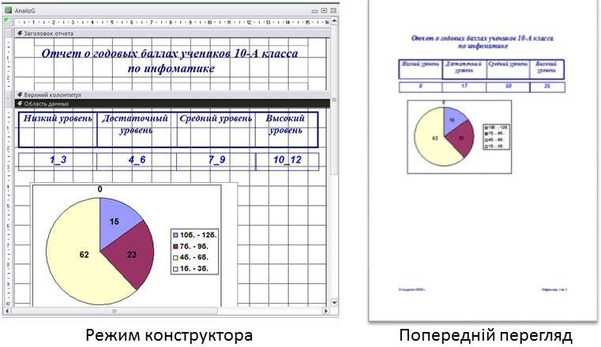
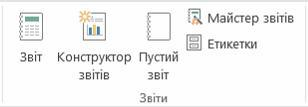
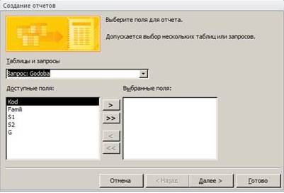
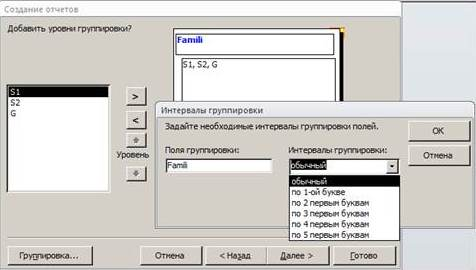
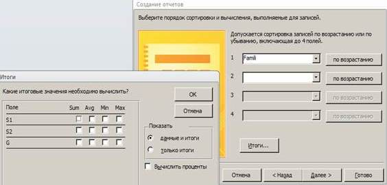
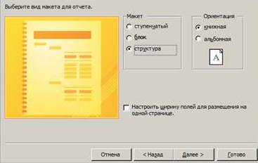
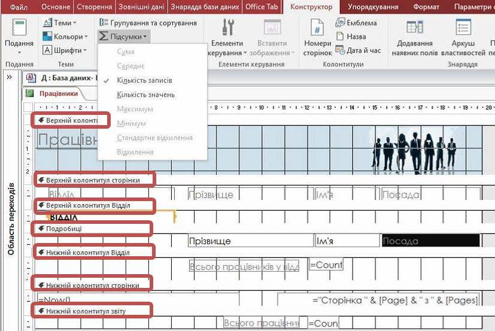

Звіт – це об’єкт бази даних, призначений для вибирання із БД необхідних даних і виведення їх на екран або принтер у зручному для користувача вигляді.
Джерелом даних для звіту є таблиці або підсумковий набір записів, отриманих унаслідок виконання запиту.
Дані можна подавати в текстовому, числовому, табличному або графічному вигляді (малюнки, діаграми, таблиці статистичних даних та інше). Вони можуть бути згруповані за певними ознаками, відфільтровані й упорядковані.
У процесі створення звіту необхідно чітко визначити структуру й зовнішній вигляд документа. Доцільно на папері розробити кілька варіантів звіту та обрати найраціональніший.
Звіт може бути виведений в одному з чотирьох режимів:
Конструктор - можна виділяти і переміщати об'єкти, змінювати розміри об'єктів, форматувати текстові об'єкти, додавати і видаляти поля і т.д. Тільки в цьому режимі можна розробляти звіт, змінювати його структуру та зовнішній вигляд, додавати або вилучати елементи управління.
Режим Макета - припускає коректування зовнішнього представлення звіту, але можливості цього режиму обмежені,
Подання звіту - зручний засіб перевірки зовнішнього вигляду і структури (макету) звіту, що створюється,
Попередній перегляд - призначений для перегляду звіту в тому вигляді, в якому він буде виведений на друк. Звіт, відкритий в режимі попереднього перегляду, можна переглянути в збільшеному або зменшеному вигляді, відобразити на екрані одночасно одну чи декілька сторінок, а також надрукувати, попередньо встановивши параметри сторінки.
Для вибору режиму вибирають відповідну команду меню кнопки Вигляд на вкладці Головна або в контексному меню до об’єкта.

Звіт дозволяє створити найпростіший табличний звіт, що містить усі поля з джерела записів, вибраного в області переходів.
Конструктор звітів відкриває порожній звіт у режимі конструктора і дозволяє додати в нього потрібні поля й елементи керування.
Майстер звітів запускає покроковий майстер, за допомогою якого можна задавати поля, рівні групування/сортування та параметри макета. Як наслідок роботи майстра буде створено звіт на базі вибраних параметрів.
Пустий звіт відкриває порожній звіт у режимі розмітки і відкриває список полів, за допомогою якого можна додавати поля до звіту. При перетягуванні поля на звіт створюється вбудований запит, який зберігається у властивості Джерело елемента керування.
Етикетки викликає майстер, в якому можна вибирати стандартний або настроюваний розмір підписів, а також указувати, які поля потрібно відображати та як їх слід сортувати.
Створювати звіти в базі даних Access можна декількома способами, які пропонуються на вкладці Створення стрічки у групі Звіти.

5. Обрати вид та орієнтацію макета звіту - зовнішний вигляд документу.
Майстер звітів дозволяє при створенні форми вибирати певні поля з
однієї чи декількох взаємопов’язаних таблиць і запитів. Майстер звітів
в діалозі пропонує визначити певні параметри звіту: вибір базових
таблиць (запитів), вибір необхідних полів, вибір полів групування, вибір
методів сортування, вибір форми друкованого макета та стилю
оформлення тощо.
1. Для запуску майстра форм треба на вкладці Створення у
групі Звіти натиснути кнопку Майстер звітів.
2. Вибрати поля з необхідних таблиць або запитів. Якщо поля
додаються з різних таблиць, то їх обирають для кожного об’єкта
послідовно і тільки після цього натискають кнопку Далі або Готово.
Особливість використання Майстра звітів полягає в тому, що всі поля, які були вибрані для звіту, будуть оформлені без участі розробника. Але при бажанні можна перейти до режиму Конструктор і відкоригувати зовнішній вигляд звіту.
3.Додати рівені групування.
Натиснути на кнопку Параметри групування, щоб відобразити діалогове вікно Інтервал групування (якщо тип даних поля – "Текст", їх можна згрупувати за цілим полем або, наприклад, першими трьома чи п’ятьма символами; для числового типу даних можна групувати за значенням або за діапазоном у вибраних проміжках).
4.Вибрати поля та спосіб сортування.
Натиснути кнопку Підсумки, якщо потрібно обчислити будь-які числові поля. В діалоговому вікні Підсумки відображаються доступні числові поля. Потрібно встановити прапорець Sum (Сума), Avg (Середнє), Min (Мінімум) або Max (Максимум), щоб додати ці обчислення до колонтитула групи.Також можна вибирати, що відображати: дані та підсумки або тільки підсумки.




Режим Конструктор використовується для удосконалення зовнішнього вигляду звіту, створеного за допомогою Майстра, але може використовуватися і при створенні звітів "з нуля". Для запуску Конструктора звітів можна скористатися командою Конструктор звітів на вкладці Створення у групі Звіти. Це призведе до відкривання вікна з порожньою заготовкою звіту.
За своєю структурою макет звіту поділено на розділи, які можна побачити у режимі конструктора:
1) Заголовок звіту (верхній колонтитул звіту) містить інформацію, що виводиться тільки один раз на початку звіту на титульній сторінці, наприклад емблему, назву звіту або дату.
2) Верхній колонтитул сторінки містить інформацію, що буде виводитися на друк вгорі кожної сторінки звіту.
3) Заголовок групи (верхній колонтитул групи) друкується перед кожною новою групою записів. Наприклад, якщо звіт згрупований по відділах, у заголовках груп можна вказати їхні назви. У звіті може бути кілька заголовків груп залежно
від кількості рівнів групування.
4) Подробиці (область даних) містять елементи керування, які становлять тіло звіту.
5) Примітка групи (нижній колонтитул групи) виводиться на друк наприкінці кожної групи записів. Тут відображаються зведені дані для групи.
6) Нижній колонтитул друкується внизу кожної сторінки. Використовується для нумерації сторінок або даних, які стосуються кожної сторінки.
7) Примітка звіту (нижній колонтитул звіту) виводиться один раз наприкінці звіту і використовується для відображення підсумків та іншої зведеної інформації по всьому звіту.
Кожна з областей є автономною, що дає можливість задавати їм власний фон та формат подання даних. Ту чи іншу область можна приховати або відобразити за допомогою відповідної команди контекстного меню. Якщо не потрібно мати в звіті області колонтитулів, їх можна прибрати, і навпаки, якщо звіти не містить цих областей, їх можна додати. Для цього в контекстному меню області даних вибрати команду Заголовок / примітка звіту.
Для вибору джерел записів для звіту треба на вкладці Знаряддя конструктора звітів→Конструктор виконати команду Додавання наявних полів, після чого з'явиться вікно Список полів.
Розміри, спосіб подання інформації, колірну гаму, положення та інші властивості можна змінювати, використовуючи інструменти на вкладках панелі Знаряддя конструктора звітів або у вікні властивостей.
